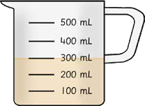
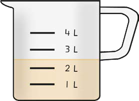

Arrange the following volumes from the smallest to the largest; 450 mL, 40 mL, 2 L, and 4 mL.
Examine the following table and then answer the questions that follow:
| Jug | Litre | Bottle | Beam balance |
| Ruler | Box | Syringe | Bucket |
(a) Which measuring tools can be used for measuring volume?
(b) Which unit measures volume?
(c) List the measuring tools that measure larger volumes
(d) List the measuring tools that measure smaller volumes.
Observe the following jugs and then write the highest amount each jug can hold.


A cow produces 20 litres of milk every day.
How many litres of milk will it produce in three days?
A pupil bought a bottle of 1 litre of juice.
The pupil then gave 500 mL of juice from the bottle to another pupil.
How many millilitres of juice did the pupil remain with?